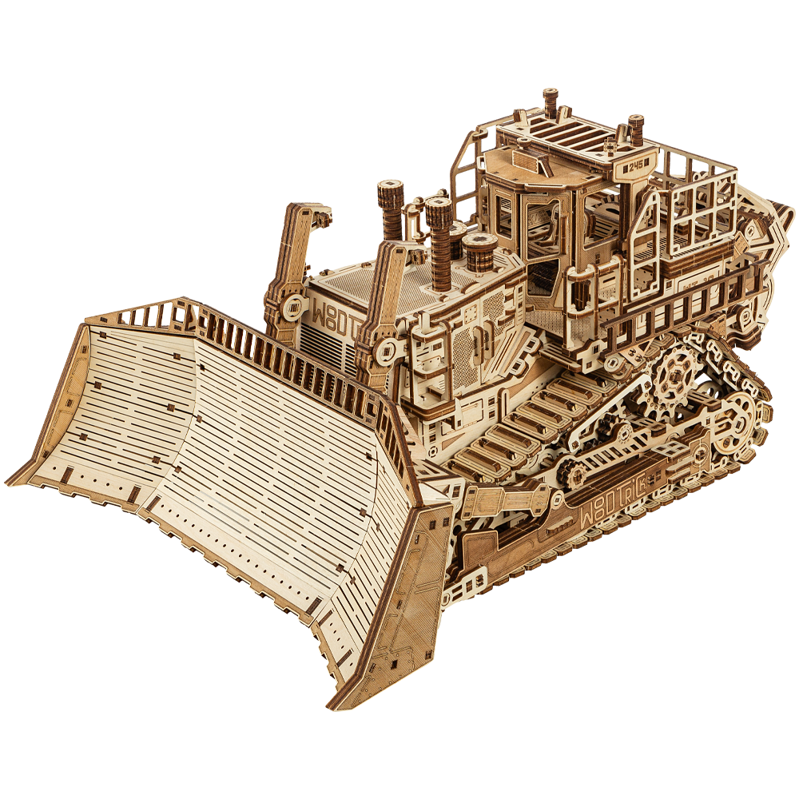
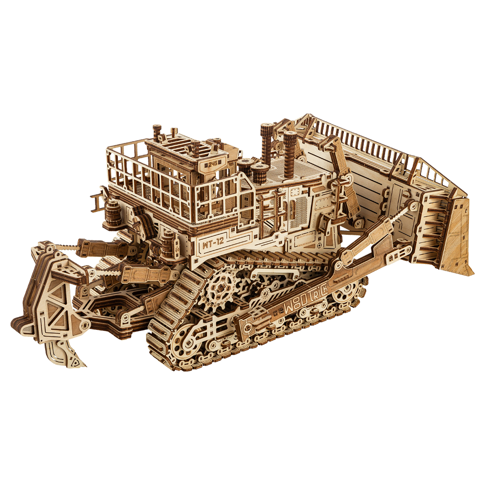
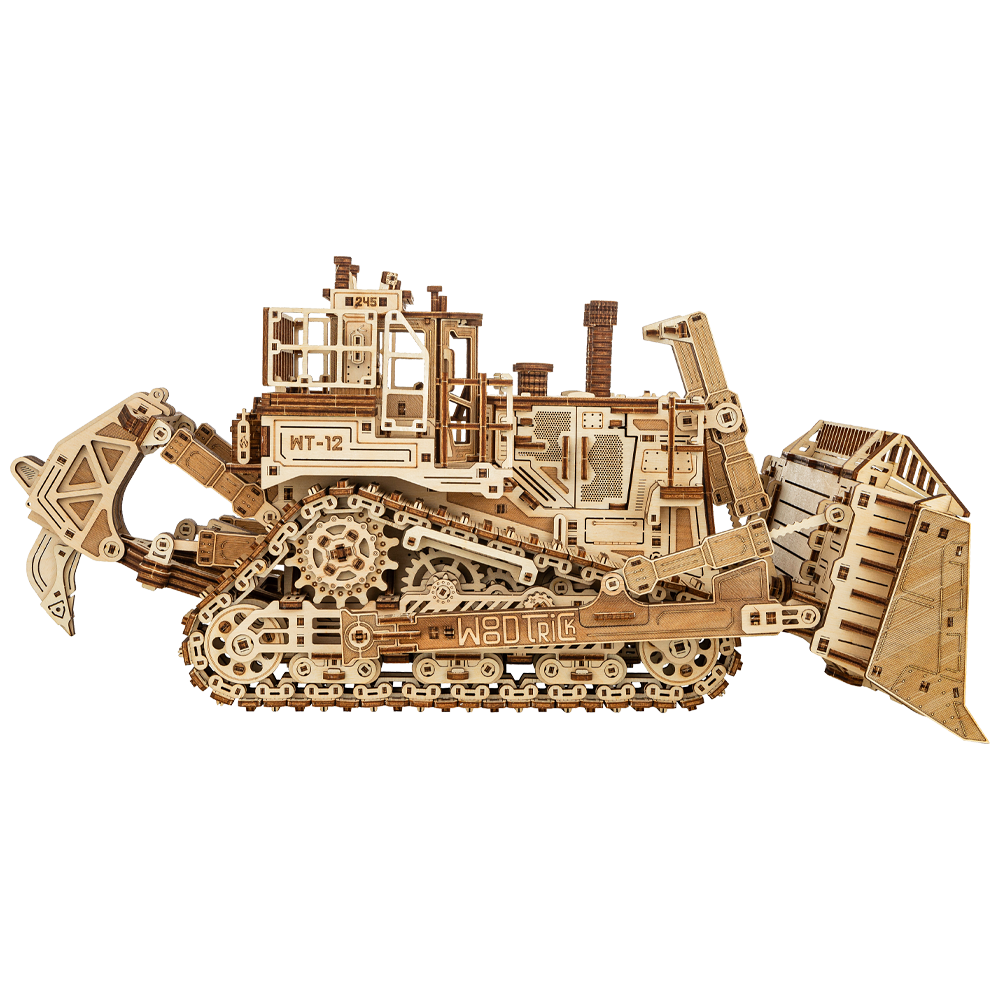

Terrain Titan is WoodTrick's most demanding build — a working wooden bulldozer with a wind-up motor, movable blade, rear hook, and a cab that opens. Most "advanced" kits stop well short of this.
Shop Terrain Titan
Not a marketing number — every mechanism below is something you build and wind up yourself.

A tensioning system drives real tracked movement — wind the knob behind the cab, flip the lever, and it rolls up to 10 feet on its own.
Opening doors, a seat, a steering wheel, plus a movable blade and rear hook that slide back and forth — detail most kits this size skip.

WoodTrick's own complexity scale, for context.
10% off Terrain Titan for anyone building their first PRO+ kit. Applies at checkout, no catch.
Get Terrain Titan →It's built for experienced hobbyists, but the printed manual walks through every stage. If you've finished a Level 4 kit, Terrain Titan is the natural next step up, not a leap into the unknown.
No — no glue, no toothpicks, plywood parts fit together by design. It does need patience: 18–20 hours is a multi-session build.
Start at Level 4 in the WoodTrick catalog and move up — the 10% code also applies to your first Terrain Titan purchase whenever you're ready.